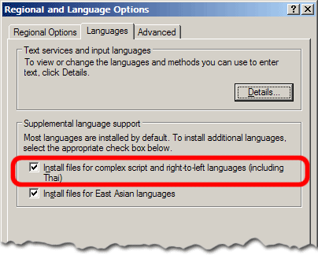
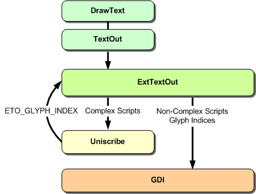
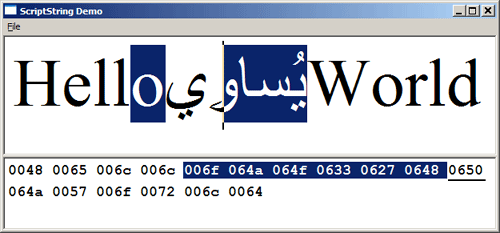

Introduction to Uniscribe
Uniscribe は、Unicode テキストの処理と表示を高度に制御する、低レベルの Win32 API です。このAPIは、あらゆる形式のUnicodeテキスト（複雑なものでもそうでなくても）に対する汎用的なインターフェースを提供するように設計されており、双方向テキストや結合文字列などのプロパティを透過的に処理します。
Uniscribeは、USP10.DLLという単一のDLLで、UniscribeのすべてのAPIを含んでいます。このDLLは、Windows 2000以上、またはInternet Explorer 5.0（またはそれ以上）がインストールされたコンピューターに存在します。2つのプラットフォームSDKファイル（USP10.HおよびUSP10.LIB）は、アプリケーションがこの複雑なスクリプトのサポートを利用できるようにするために、マイクロソフトによって提供されます。Uniscribeの重要な点は、複雑なスクリプトを処理するだけではなく、すべてのUnicodeテキストを処理して表示することができるということです。
Uniscribe API は、2 つのカテゴリに分かれています - 低レベル API 自体と、Uniscribe を直接扱う際の複雑さの多くを隠す ScriptString と呼ばれるラッパーライブラリです。このチュートリアルの目的は、本格的な作業に入る前に、Uniscribe の世界を簡単に紹介することです。
Uniscribe in Windows
Neatpadを始めたばかりの頃、私はUniscribeが何を必要としているのかよく知りませんでしたし、Unicodeを調べて初めて、Unicodeテキストの表示をめぐる問題を完全に理解しました。Uniscribeは、MSDNドキュメントの中で独自のセクションを占めていますが（ここ）、時折言及される以外は、その存在をすでに知っていない限り、非常に見落としやすいものです。
MSDNによると、Windows 2000以降、複雑なスクリプトをサポートするためにExtTextOut関数（およびTextOut、DrawTextなどの他の関数）が拡張されました。これは事実ですが、アプリケーションがUTF-16テキストのバッファを持っていつでもExtTextOutW（Unicodeバージョン）を呼び出すことができ、それが常に正しく表示されるという印象を与えます。

Windowsが設定されていない限り、ExtTextOutなどの関数は自動的に複雑なスクリプトをサポートしません。上の図は、「地域と言語のオプション」ダイアログです。ハイライトされている2つの設定は、デフォルトでインストールされているアメリカ/イギリスのWindowsでは通常有効になっていません。
複雑なスクリプトのサポートを有効にすると、いくつかの追加ライブラリがインストールされます。その後、ExtTextOutは複雑なスクリプトを表示するために必要なときにUniscribeを使用します。
BOOL ExtTextOut (
HDC hdc, // handle to DC
int X, // x-coordinate of reference point
int Y, // y-coordinate of reference point
UINT fuOptions, // text-output options (ETO_GLYPH_INDEX etc)
RECT * lprc, // optional dimensions
LPCTSTR lpString, // string
UINT cbCount, // number of characters in string
INT * lpDx // array of spacing values
);
ExtTextOutは、文字列の表示に最もよく使われます。しかし、それ以上のことができます。ETO_GLYPH_INDEXおよびETO_PDYオプションを指定すると、ExtTextOutを使用して、文字ではなくグリフのバッファを表示できます。ExtTextOutのこの機能は、下の図のように、複雑なスクリプトを含む文字列を表示するときに使用します。

Text drawing in Windows 2000 and above
複雑なスクリプトを含む複雑な文字列の場合、ExtTextOutはUniscribeを利用して表示します。Uniscribeは、文字列をグリフのグループに分解してから、今度はETO_GLYPH_INDEXオプションを指定して、元の文字値の代わりにグリフインデックスのバッファを指定して、ExtTextOutを再呼び出しします。特別な処理を必要としない通常のUnicodeテキストについては、ExtTextOutは以前のWindowsバージョンでの動作とまったく同じです。
DrawTextやTextOutのようなルーチンが複雑なスクリプトのレンダリングをほとんど成功させることができるのに、なぜUniscribeが必要なのかと思われるかもしれません。単一のテキスト文字列を出力するだけのアプリケーションでは、Uniscribe は必要ありません。
Uniscribe が必要になるのは、文字列を（スタイリングやフォーマットのために）分割しなければならないときだけです。これまでのNeatpadのように、Unicode文字列をセクションに分割することはできません。そうすると、文脈に応じたシェーピング動作や双方向のサポートなど、あらゆるものが壊れてしまいます。現代のテキストエディタは、Unicodeとそれに付随する様々なスクリプトをサポートしなければなりません。私たちは、Uniscribeに移行する以外の選択肢はありません。
The ScriptString API
ScriptString APIは、単一のフォントと色でテキストを表示したいアプリケーションのために設計されています。メモ帳(およびWindows標準のEDITコントロール)は、ScriptString APIの代表的な例です。このAPIの優れた機能のひとつに、文字列を表示する際に、その文字列の一部を「選択済み」として表示することができます。これは、非常に手間を省くことができる、非常に優れた機能です。
ScriptStringAnalyze関数は、Uniscribeの出発点となる関数です。見た目にはかなり威圧感のある関数です。しかし、その目的は、Unicodeテキストの任意の文字列に対してシェーピングとグリフ生成を行うことであり、完了するとSCRIPT_STRING_ANALYSIS構造体を返します。
HRESULT WINAPI ScriptStringAnalyse (
HDC hdc,
void * pString,
int cString,
int cGlyphs,
int iCharset,
DWORD dwFlags,
int iReqWidth,
SCRIPT_CONTROL * psControl,
SCRIPT_STATE * psState,
int * piDx,
SCRIPT_TABDEF * pTabdef,
BYTE * pbInClass,
SCRIPT_STRING_ANALYSIS * pssa
);
SCRIPT_STRING_ANALYSISは不透明な構造体であり、この構造体に何が含まれているかを詳細に説明する文書はありません。しかし、これは重要ではありません。というのも、この構造体は ScriptString API の残りの部分に渡されるだけで、それ以上の知識は必要ないからです。
HRESULT WINAPI ScriptStringOut (
SCRIPT_STRING_ANALYSIS ssa,
int iX,
int iY,
UINT uOptions,
RECT * prc,
int iMinSel,
int iMaxSel,
BOOL fDisabled
);
ScriptStringOutは、以前に解析されたテキストの文字列を表示するために使用されます。SCRIPT_STRING_ANALYSIS構造体のみが渡され、これには元の文字列を表示するために必要なすべての情報が含まれています。
HRESULT WINAPI ScriptStringXtoCP (
SCRIPT_STRING_ANALYSIS ssa,
int iX,
int * piCh,
int * piTrailing
);
ScriptStringXtoCPは面白い関数です。これは、Unicodeテキストの文字列の中で、キャレットやマウスの位置を決めるためのメカニズムを提供します。
HRESULT WINAPI ScriptStringCPtoX (
SCRIPT_STRING_ANALYSIS ssa,
int icp,
BOOL fTrailing,
int * pX
);
ScriptStringCPtoX は ScriptXtoCP と対をなすものです。これは文字列の位置を表示座標に変換するという逆の作業を行います。
HRESULT WINAPI ScriptStringFree(
SCRIPT_STRING_ANALYSIS * pssa
);
アプリケーションが文字列の表示を終えたら、ScriptStringFree関数を使って後始末をします。ここで紹介した以外にも、さまざまなScriptString関数がありますが、これら5つの関数を使うだけで、アプリケーションは最小限の労力で、完全な機能を持つテキストエディタのフロントエンドを実装することができます。

上の画像は、私が書いた ScriptString API を使った簡単なアプリケーションです。ソースコードとデモ用の実行ファイルは、この記事のトップからダウンロードできます。
ScriptStringの奇妙な点はこれです。ScriptStringOutは、レンダリングに使われたデバイスコンテキストが、ScriptAnalyzeで文字列を分析したときに使われたものと同じでない場合、失敗します。
Introducing UspLib
ScriptString API の主な問題点は、複数のフォントや色でテキストを表示できないことです。このため、今回の Neatpad の用途には特に適していません。唯一の選択肢は、低レベルの Uniscribe 関数を直接使用することです。
USPLibは、ScriptStringが提供できる機能よりもはるかに豊富な機能を提供するために私が書いたライブラリです。この新しいライブラリは、今後数回のチュートリアルで説明する低レベルのUniscribe APIのラッパーを提供します。UspLibは、ScriptStringのUniscribeラッパーと非常に似たアプローチをとっていますが、テキストの色付けやフォーマットに関しては、さらに進んでいます。
USPDATA * USP_Allocate();
最初のAPIはUSP_Allocateです。この関数は、その後のUspLibの操作に使用しなければならないUSPDATAオブジェクトへのポインタを返します。
BOOL USP_Analyze (
USPDATA * uspData,
HDC hdc,
WCHAR * wstr,
int wlen,
ATTR * attrRunList,
UINT flags,
USPFONT * uspFont
);
USP_Analyze は ScriptStringAnalyze に似ています。違いは、既存のUSPDATAオブジェクトを使って、テキストの文字列を再分析できることです。
void USP_ApplyAttributes (
USPDATA * uspData,
ATTR * attrRunList
);
文字列が分析された後（つまり、項目化され、形が整えられた後）、USP_ApplyAttributesを使用して、いつでも色属性を再適用することができます。ATTRランリストに格納されているフォント情報は無視されます。
void USP_ApplySelection (
USPDATA * uspData,
int selStart,
int selEnd
);
USP_ApplySelection は USP_ApplyAttributes と同様のタスクを実行します。しかし、今回はUSPDATAオブジェクト内の選択フラグのみが変更されます。
int USP_TextOut (
USPDATA * uspData,
HDC hdc,
int xpos,
int ypos,
RECT * rect);
USP_TextOutは、ScriptStringOutと対をなすものです。前に解析されたUSPDATAオブジェクトを入力として受け取り、指定された場所にテキストを描画します。描画されたテキストには、フォント、色、選択ハイライトが適用されます。
void USP_Free(USPDATA * uspData);
USPDATAオブジェクトが不要になった時点で、USP_Freeを呼び出す必要があります。次の2、3回のチュートリアルでは、私がどのようにしてUspLibを実装したかを詳しく説明し、Uniscribeを直接使用する場合の詳細と例を示す予定です。
私はUspLibをNeatpadとは切り離して設計しました。私の意図は、それが完全に独立したライブラリであり、複雑なスクリプトのサポートを追加するためにどんなアプリケーションでも使用できることです。UspLibは、Uniscribe DLL以外の依存関係がないため、プロジェクトにインポートしてすぐに使用することができるはずです。
Further Reading
Uniscribeについては、MSDNで公開されている以外の情報はほとんどありません。
Uniscribe Platform SDK Reference
Supporting Multilanguage Text Layout and Complex Scripts with Windows NT 5.0
Globalization Step-by-Step - Complex Scripts Awareness
There is also the CSSamp example program from Platform SDK, in the Samples sub-directory:\PlatformSDK\Samples\winui\globaldev\CSSamp
Alternatives to Uniscribe
すべてのエディターがUniscribeを使用しているわけではありません。もしオープンソースがお好みであれば、現在、Uniscribeに代わる非常に強力な選択肢を提供する、2つの素晴らしい取り組みがあります。ATSUIと呼ばれる、AppleのOSXで利用可能なUniscribeの同等のバージョンもあります。
International Components for Unicode (ICU)は、IBMが開発したオープンソースのUnicodeサポートライブラリです。文字変換、解析、検索、レイアウトなど、さまざまな機能を備えています。
Pangoは、Unicodeテキストをレイアウト、レンダリングするためのオープンソースのライブラリです。GTKディスプレイライブラリの上に配置されており、CairoまたはWin32（Uniscribe）のレンダリングバックエンドを指定できます。Uniscribeよりも完全なソリューションを提供しており、非常によく設計・実装されていると思われます。ただし、PangoはUTF-8ベースなので、アプリケーションの他の部分がUTF-16の場合は、この点が考慮されるかもしれません。
Apple Type Services For Unicode Imaging (ATSUI) は、Apple 独自の Uniscribe バージョンですが、Microsoft の取り組みよりも高レベルであるように見えます。ATSUIのドキュメントを簡単に見てみると、MicrosoftがUniscribeのために管理していたものよりも、はるかに使いやすいデザインで、実質的に優れたドキュメントであることがわかりました。
Coming up in Part 12
ここでは、Uniscribeの簡単な紹介をしましたが、Uniscribeの機能を少しでも理解していただき、ScriptStringサンプルプログラムをダウンロードしてテストしていただければ幸いです。
第12回は、最初の2つのUniscribe関数を取り上げます。ScriptItemizeとScriptLayoutです。この2つのAPIだけでもかなりの内容をカバーしており、Neatpadを使ってこの方法でテキストが描画されるのを見るのは第13回以降になるでしょう。
最後に、ここ数ヶ月、Neatpadに関するフィードバックがあまりありませんでしたが、このチュートリアルを読んで役に立ったでしょうか？